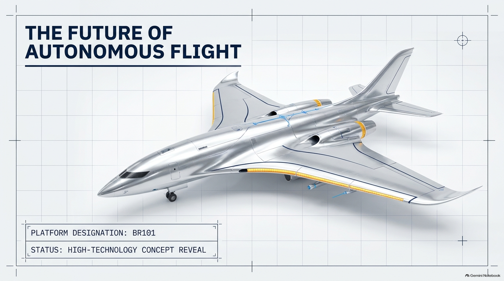

These are concept illustrations, not photographs of verified aircraft. The BR202 and BR303 livery studies are separate from the numerical teaching assumptions in the aircraft comparison and energy labs. No airline or government affiliation is implied.
THE BR101 VISION / FROM YOUR PRESENTATION
Harvest. Store. Sense. Connect.
Raj Solara now brings together the systems in your 14-slide Platform BR101 concept. Its proposed role is uncrewed environmental observation and research, with human mission oversight.
01 / Harvest
Photovoltaic wing surfaces capture energy under suitable illumination.
02 / Store
An onboard rechargeable battery stores surplus energy for periods with less sunlight.
03 / Decide
Proposed onboard processing combines sensor inputs and reassesses the mission.
04 / Connect
A proposed satellite link exchanges updates and optical or thermal observations.
Your original BR101 design reference

Source: your supplied Platform BR101 presentation, slide 1. Original embedded Gemini Notebook credit retained. The British-livery hero is a separate illustrative interpretation.
Ambition versus evidence: indefinite endurance, instant global delivery and uninterrupted satellite coverage are ambitions in the presentation, not verified specifications. This educational site demonstrates interfaces and simplified models; it does not operate an aircraft.
BR101 / INTERACTIVE SYSTEMS LAB
Test the idea. Explore its limits.
A day in the energy cycle
Change the sunlight and load to see whether an invented battery budget lasts from midnight to midnight.
Fixed 160 kWh battery; 32 kWh reserve; sunlight 06:00–18:00; hourly steps; 90% charging efficiency. Deliberately invented inputs, separate from the area-based energy lab above.
Illustrative energy balance; kWh remaining each hour
Hour
Solar kW
Battery kWh
Mission response demonstration
Request a fictional satellite update. The visible delay illustrates waiting for shared data; no network, sensor or aircraft is connected.
Ready. Choose a scenario.
No update requested.
Proposed sensing: optical camera, thermal imaging and obstacle/environment inputs. “Flying video” is a payload idea; no live video is provided. These responses are educational labels, not safe flight procedures.
01 / THE COLLECTION
Your flagship. Four possibilities.
Explore fictional designs by mission. Compare intentions, not certified specifications. Shared concept imagery.
Your comparison
Select up to three aircraft.
02 / THE ENERGY LAB
What can sunlight contribute?
Move the controls to explore an intentionally simplified constant-power model.
Read the assumptions and limitations
Solar power = panel area × 1 kW/m² reference irradiance × solar-input fraction × 22% assumed efficiency. Available battery energy = capacity × charge fraction × 80%, retaining 20% of the starting energy. Endurance = available energy ÷ (demand − solar power).
All dimensions, capacities and loads are invented for this exercise. No weather, mass, drag, take-off, temperature, degradation or charging losses are modelled. This is not range, certification, feasibility or flight-planning evidence. Solar input does not imply unlimited flight.
03 / INTELLIGENCE WITH ACCOUNTABILITY
Autonomy is more than removing a pilot.
Solar-assisted energy
Explore the technology topics using the buttons.
04 / YOUR DESIGN STUDIO
Give your ideas a different altitude.
Illustrative schematic. Cabin symbols are design ideas.
Your saved designs
05 / START A CONVERSATION
Good ideas begin with curiosity.
Try the demonstration enquiry. Nothing is transmitted or stored. Use sample details.